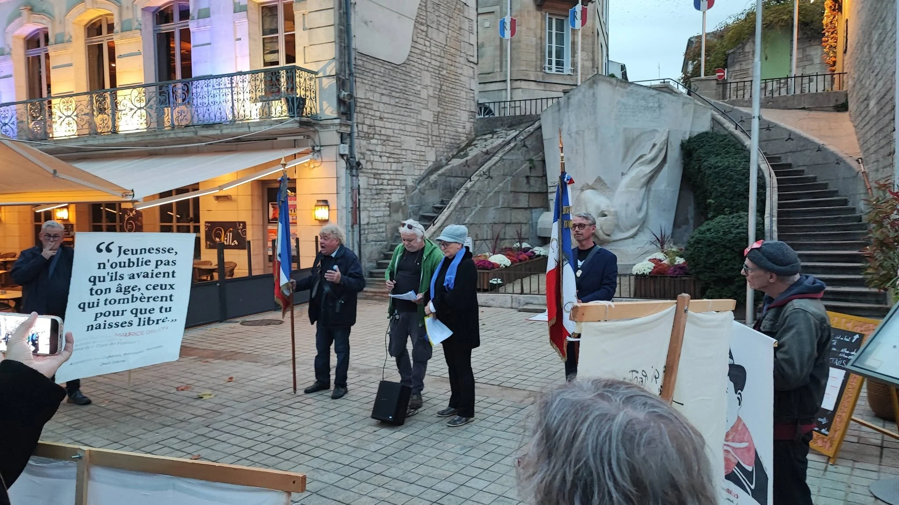
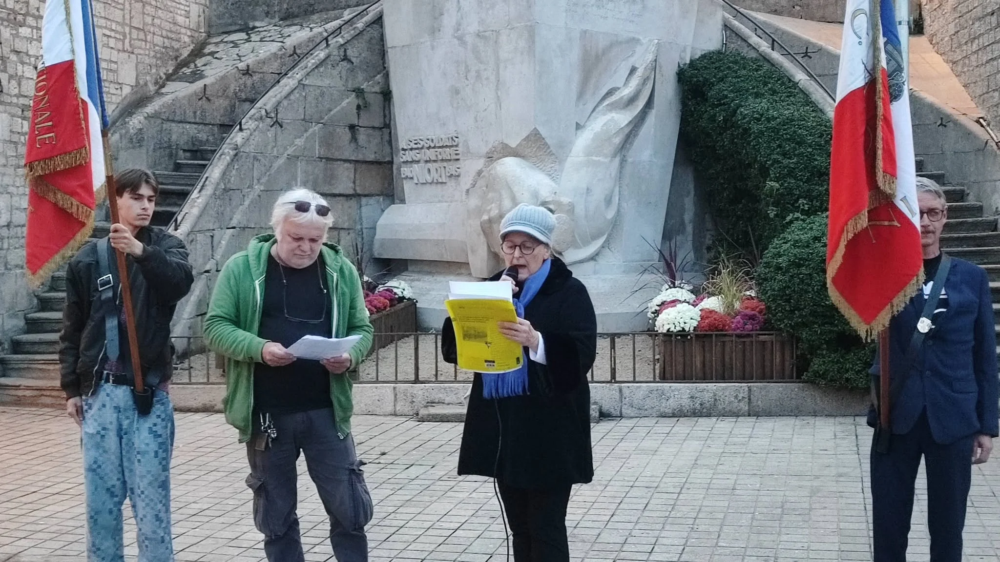
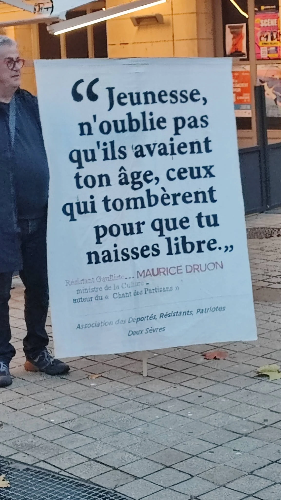
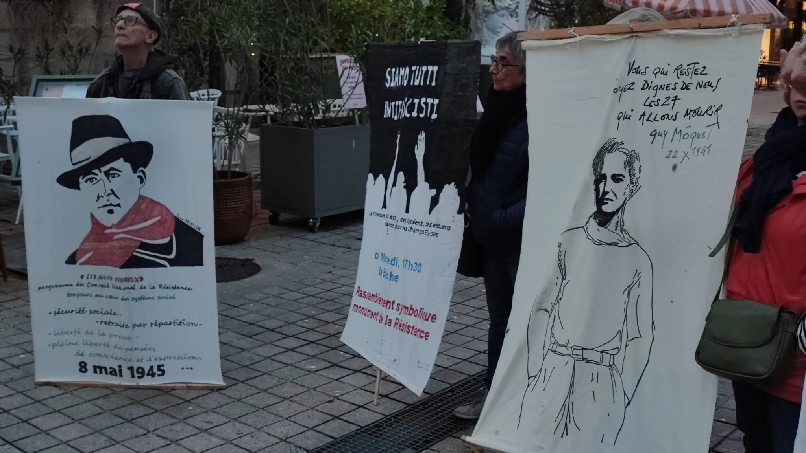
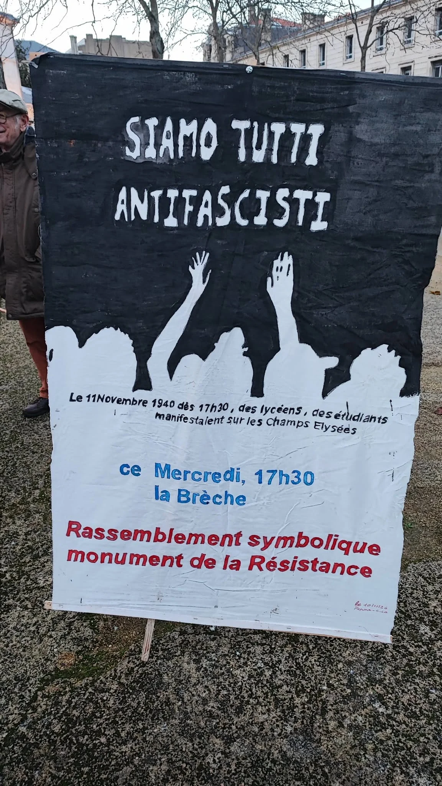
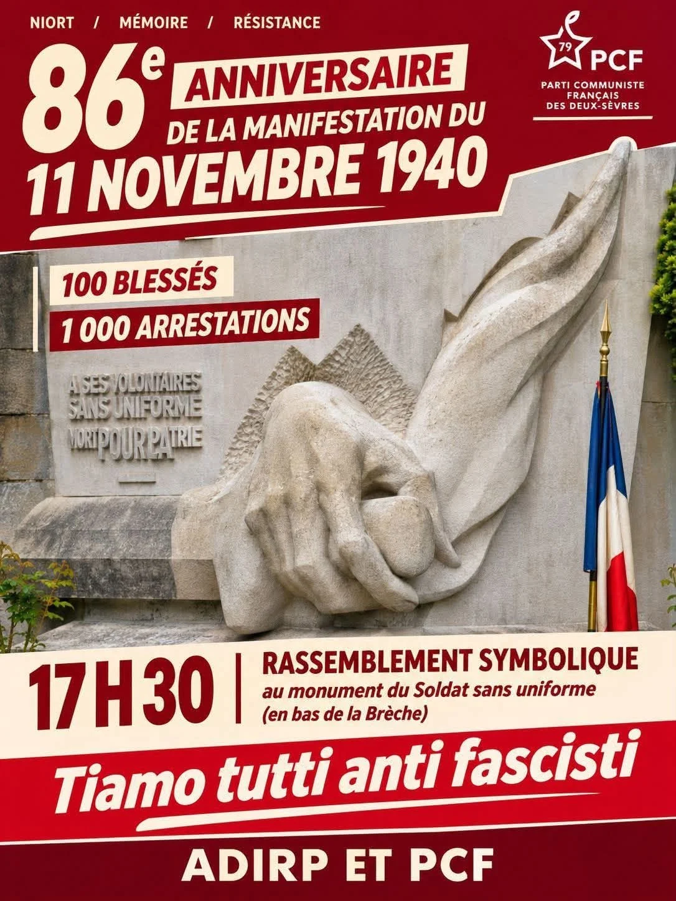

Publication du PCF 79
À Niort, nous avons rendu hommage aux jeunes qui ont défié l’Occupation
Date indiquée par Facebook · 12 novembre 2026
Légende originale du PCF 79
A l'initiative de l'#ADIRP79 (Association des Déportés, Internés, Résistants et Patriotes), une commémoration s'est déroulée en fin d'après-midi en souvenir du 11 novembre 1940 où dans un Paris sous occupation allemande, la jeunesse avait bravé l'interdiction des manifestations commémoratives.
Dans des lycées et facultés, des tracts, des inscriptions et des mots d’ordre se diffusaient pour s'opposer à cette situation. L’arrestation du physicien Paul Langevin fin octobre 1940, a nourri encore plus la mobilisation étudiante. Le 11 novembre 1940, plusieurs milliers de jeunes convergeaient vers les Champs-Élysées et la place de l’Étoile. Certains apportaient des fleurs pour la tombe du Soldat inconnu, installée sous l’Arc de Triomphe. La Marseillaise retentira ainsi que des cris patriotiques, un défi adressé à l’occupant. La répression s’abattra sur les manifestants. Les forces allemandes interviennent, des jeunes sont frappés, une centaine blessée et près d’un millier de personnes arrêté. Des policiers français participent aux arrestations.
Cette journée du 11 novembre 1940 compte parmi les premiers grands actes publics de résistance à l’Occupation. Elle était à l'initiative de la jeunesse étudiante.
C'est pour s'en souvenir que nous étions rassemblés 86 ans plus tard à l'initiative de l'#ADIRP79, avec le soutien du PCF 79 - Parti Communiste Français fédération des Deux-Sèvres , et la présence des conseillers départementaux Elodie Truong et Bernard Penicaud.
#11Novembre1940 #Resistance #Jeunesse #Niort #Adirp
Repères éditoriaux
Le 11 novembre, nous étions à Niort aux côtés de l’ADIRP 79, à l’initiative de la commémoration. Nous nous sommes souvenus des lycéens et des étudiants qui, en 1940, ont manifesté à Paris jusqu’à l’Arc de Triomphe. Le compte rendu fédéral et ses photos gardent la trace de cet hommage.






Sources
PCF 79 · relevé Meta et fil Facebook · FB-1466768958969686
À lire aussi · 11 novembre. Notre appel à se rassembler pour la mémoire de 1940